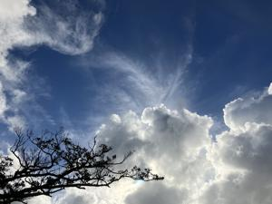
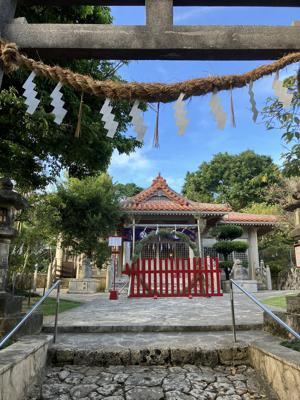

うるがいの話 ある日
最新: 茅の輪（ちのわ）くぐり【うるがいの話 ある日】とは 一日だけのプログです
『うるがいの話』の最新一日だけのプログで、通信料が少なく経済的だ。カニの画像をクリックすると全ての日付が載る『うるがいの話』サイトを表示します
|
|
【うるがいの話】 うるがい(ｳﾙｶﾞｲ urugai)とは、『もずくがに』の名前でとても大きくなります。 |
|---|---|
|
|
【カミマヤーの話】 猫のことを方言でマヤーといいます。カミマヤー（kamimayaa）とは、神の猫のことです。 |
|
【たながぁの音楽】 たながぁ（ﾀﾅｶﾞｰ tanagaa）とは手長えびのことで、何種類かあり大きいのは車 エビぐらいになります。 |

|
【ぶながぁの話】 ぶながぁ(ﾌﾞﾅｶﾞｰ bunagaa)とは、赤い髪の毛、赤い身体、そして身長は１ｍ２０ｃｍ ぐらい、川の蟹を食べているの目撃された。場所は沖縄県国頭郡大宜味村のと ある村僕の隣近所に住んでいる爺さんから、聞いた話です。 |
|
|
【ギーマの話】 ギーマ(giima)とは、山原の里山に咲くスズランに似た、 花を付けます。実は食べられます、 気が付くと口の周りが紫になっています。 |
2024年06月30日 (日）茅の輪（ちのわ）くぐり
15:33

基本的な霊的に大切なことは、
「６月２１日（夏至）〜６月３０日」の期間に神社に参拝すればＯＫです。
もし神社に、「茅の輪（ちのわ）くぐり」が用意されていれば、その注意書
き通りにくぐれば大丈夫です。
茅の輪のくぐり方は、ただ通過するだけでもＯＫです。
令和６年の識名宮では、今日の夕方１８時から儀式が行われる。参加できそ
うにないので、きのう一人でコッソリとくぐりをする。ＯＫかな。

６月末完成予定の『唐船ドーイ』の動画は、未だ完成せず。諦めず、ねばる
ことにする。昨日、おかしくなっていた『ギーマの話』のサイトが、正常に
なった。フムフム、私のせいではなくｆｉｒｅｂａｓｅ（無料）の不具合だ
った、気持ちがスッキリした。
今朝の９時過ぎに県立図書館へ行く、駐車場の入り口に入るが、いつもの警
備員がいない。ウン？、よくみると日差しを避けて、入口のかなり離れた日
がげにいた。暑いからな、でも基本的にはダメだと思うが。
１５時２０分 ビットコインの総資産 ￥２８、３７５（↑３４）